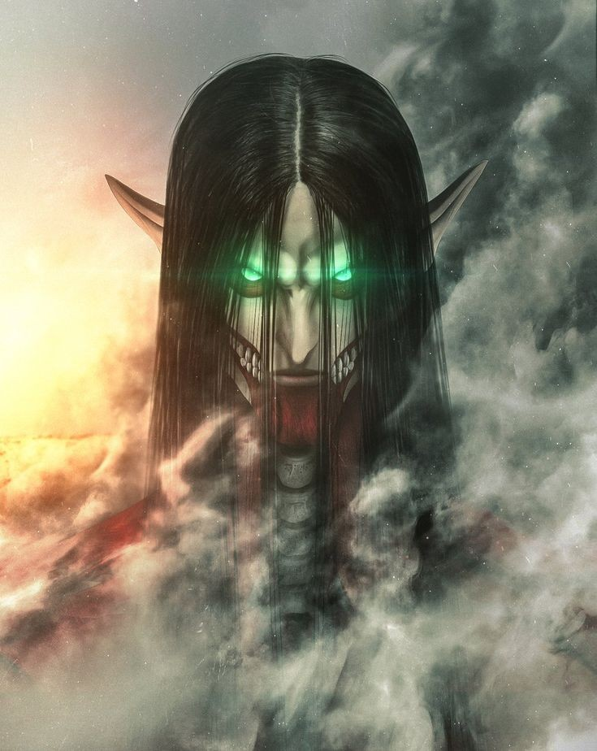

Attack On Titan
Attack on Titan is a japanese dark fantasy anime television series, adapter from the manga of the same name by Hajime Isayam, that premiered on April 7, 2013.
Plot
Eren Yeager is a boy who lives in the town of Shiganshina, located on the outermost of three circular walls protecting their inhabitants from Titans. In the year 845, the first wall (Wall Maria) is breached by two new types of Titans, the Colossal Titan and the Armored Titan. During the incident, Eren's mother is eaten by a Smiling Titan while Eren escapes. He swears revenge on all Titans and enlists in the military along with his adopted sister Mikasa Ackerman and his best friend Armin Arlert. Five years after Shiganshina's fall, the Colossal Titan attacks the city of Trost, located on the second innermost wall (Wall Rose). Eren helps to successfully defend the city after he discovers a mysterious ability to turn himself into a sentient Attack Titan. Additionally, he regains memories of his father giving him this ability shortly after the fall of Wall Maria, and telling him that the truth about their world can be found in their basement in Shiganshina. These events draw the attention of the Survey Corps and their commander, Erwin Smith, who intend to use his power to reclaim Wall Maria and reach the Yeagers' basement. Eren, Mikasa, and Armin are transferred to the Special Operations Squad, under the care of Captain Levi Ackerman and Hange Zoë.
Source: Wikipedia